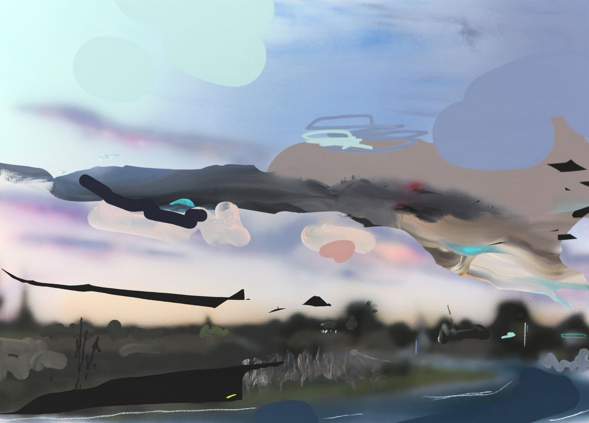
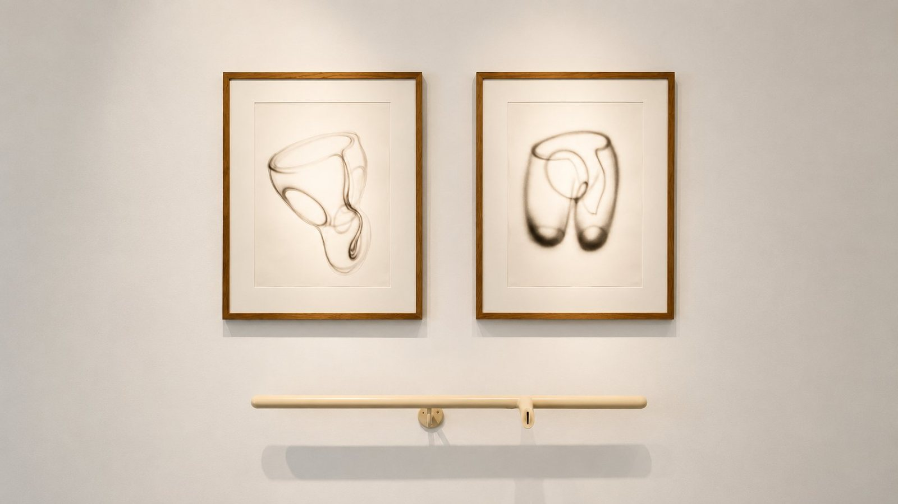

7 mars – 16 avril 2026 — Galerie Rabouan Moussion
Entre deux cœurs
Texte de présentation
Comment représenter une relation amoureuse, ses complicités intérieures, son histoire et ses récits, sa posture objective et sociale ?
C'est l'exercice ambitieux et délicat que Cédrix Crespel essaie de relever dans une peinture qui n'est jamais une surface lisse ni un simple espace de projection. Elle se déploie comme un territoire instable, traversé de tensions, de glissements et de résistances : entre dévoilement et retenue, entre une lumière qui effleure les formes et une ombre qui les consume sans jamais les abolir.
La toile devient un champ sensible où se joue une dialectique constante entre ce qui apparaît et ce qui se dérobe, entre ce que l'on donne à voir et ce que l'on choisit de maintenir à distance.
Texte : Thomas Bernard
ArtisteCédrix Crespel
Né en 1974 à Batz-sur-Mer
Vit et travaille à Guérande
GalerieGalerie Rabouan Moussion
11 rue Pastourelle, 75003 Paris
Dates7 mars – 16 avril 2026
CommissaireThomas Bernard
Courtesy de l'artiste et de la Galerie Rabouan Moussion,
Loin d'un récit explicite ou d'une frontalité spectaculaire, ses œuvres s'inscrivent dans une zone intermédiaire : ni pure abstraction du sentiment, ni figuration illustrative. Elles habitent cet espace du trouble, du presque-visible, où l'image ne se livre jamais entièrement.
L'histoire de l'art est profondément traversée par cette quête d'intimité et de dévoilement. Du clair-obscur du Caravage, au velouté des chairs d'Ingres, à l'érotisme feutré de Balthus, jusqu'à Bacon et la distorsion convulsive des figures — chaque époque a inventé ses propres stratégies pour rendre visible la proximité des corps et des affects.
Les tableaux de Crespel naissent d'un flux d'images partagé avec son épouse : une correspondance visuelle, continue, parfois quotidienne, où l'image devient un langage à part entière.
Face à ces œuvres, le spectateur est placé dans une position ambiguë : ni voyeur, ni simple témoin. Il devient dépositaire d'une intimité qui ne lui appartient pas, mais qui lui est néanmoins confiée.
Pour toute demande concernant les œuvres, contacter la Galerie Rabouan Moussion ou Forma Mantis.

16 avril – 23 mai 2026 — Galerie NEC,
Charles Mason — Sweet thing
À propos
Charles Mason a inscrit son travail dans une tradition profondément ancrée dans la sculpture anglaise, marquée par une attention particulière à la relation entre forme, espace et expérience sensible.
À la manière des figures majeures comme Henry Moore ou Antony Gormley, il ne s'agit pas tellement de représenter mais faire advenir une présence, souvent silencieuse, presque méditative. Mais là où cette tradition s'est historiquement attachée au paysage ou au corps, Charles Mason déplace subtilement le regard vers l'espace domestique, vers des formes plus modestes, plus proches du quotidien.
Ses sculptures, souvent constituées d'éléments simples — fragments de mobilier, objets trouvés, matériaux ordinaires — prolongent cette sensibilité anglaise tout en la ramenant à une échelle intime.
Commissariat : Thomas Bernard — Galerie NEC,
ArtisteCharles Mason
Artiste britannique
GalerieGalerie NEC — Nilsson & Chiglien
117 rue Vieille du Temple, 75003 Paris
Dates16 avril – 23 mai 2026
FormatSculptures, dessins, installations
Exposition monographique
Commissariat Thomas Bernard
D'autres visuels seront ajoutés prochainement.
Courtesy Charles Mason & Galerie NEC, — Sweet thing, 16 avril – 23 mai 2026
Essai critique
Il y a une tradition presque secrète dans la sculpture britannique d'après-guerre.
Secrète parce qu'elle ne se donne pas à voir facilement — parce qu'elle se tient dans les carnets, dans les tiroirs, dans les réserves des ateliers. C'est la tradition du dessin de sculpteur. Non pas l'esquisse préparatoire, la note de travail rapide ou le brouillon fonctionnel, mais le dessin comme espace de vérité parallèle, comme territoire où la pensée va plus loin que le volume ne peut aller.
Henry Moore l'avait formulé dans ses carnets avec une clarté presque brutale : le dessin lui permettait d'atteindre l'os sous la peau, de penser l'intérieur d'un corps sans passer par sa surface. Ses Shelter Drawings de 1940, réalisés dans les stations de métro londoniennes pendant le Blitz, ne préparaient aucune sculpture. Ils pensaient le corps vulnérable, replié, vivant — ce que le bronze, nécessairement, aurait monumentalisé et donc trahi.
Richard Long radicalisa ce geste jusqu'à faire de la boue et du paysage sa surface de dessin. Antony Gormley parlait de dessiner avec le corps. Et Rachel Whiteread dessinait les volumes négatifs : l'intérieur des choses, l'air emprisonné, ce que l'œil ne voit jamais directement.
Ce que toutes ces pratiques partagent, c'est une conviction profondément ancrée dans la culture artistique britannique : le dessin dit ce que la sculpture tait.
C'est précisément dans cet espace exigeant, peu spectaculaire, rarement exposé seul que s'inscrit l'œuvre graphique de Charles Mason. Non pas en marge de ses sculptures — comme leur face retournée.
Mason naît à Exeter en 1962. Il se forme à la Bristol School of Art, puis à la Slade School of Art à Londres, en sculpture, entre 1987 et 1989. La Slade : l'institution qui a formé plusieurs générations de sculpteurs britanniques, un lieu où le dessin n'a jamais été relégué au rang d'outil secondaire.
L'exposition Early Works, présentée à Paris en 2016 à la Galerie Thomas Bernard Cortex Athletico, révéla pour la première fois la profondeur de cette pratique graphique. Ses formes de jeunesse travaillaient déjà une grammaire du corps indécidable — ni masculin ni féminin, ni organique ni industriel. Pas encore solidifié. Encore mobile. Encore hésitant.
Voir les dessins de Charles Mason, c'est rencontrer le moment où une forme hésite encore à naître. C'est une expérience rare, dans l'art contemporain, et précieuse : celle de la pensée avant qu'elle ne se solidifie.
Thomas Bernard
Pour toute demande sur cette exposition, contacter Forma Mantis ou la Galerie NEC.

10 – 14 décembre 2024 — Galerie Strouk,
La jeunesse a toujours raison même quand elle a tort
Présentation
Une célébration de la créativité de plus de trente artistes issus des Beaux-Arts de Paris.
La Galerie Strouk a invité une sélection d’artistes issus de l’ENSBA à investir l’espace du 5, rue du Mail pour une exposition exceptionnelle organisée par Alain Berland avec la complicité de Thomas Bernard.
« Ces artistes sont toutes et tous des personnalités fascinantes des arts visuels. »
— Alain Berland
Projet développé avec la complicité de Thomas Bernard.
LieuGalerie Strouk
5 rue du Mail, 75002 Paris
Dates10 – 14 décembre 2024
CommissaireThomas Bernard
ArtistesPlus de trente artistes de l’ENSBA Paris, dont Aurélia Cassé.
Courtesy Galerie Strouk, — STROUK × ENSBA, décembre 2024
Pour en savoir plus sur les artistes exposés ou les projets nés de cette collaboration, contacter Forma Mantis.

24 janvier – 8 mars 2025 — Galerie Strouk,
Les Nymphéas : Miroirs des profondeurs
La surface comme paradigme de la modernité
« Les yeux s’enfoncent comme dans les remous d’eaux profondes. »
— Louis Gillet devant les Nymphéas
La galerie Strouk a souhaité apporter une vision contemporaine à l’œuvre de Claude Monet en s’appuyant sur les notions de surface et de profondeur. Cette contemporanéité tragique charge les Nymphéas d’une dimension mémorielle insoupçonnée : sous la beauté de la surface picturale dorment les morts, comme sous les reflets paisibles des étangs reposent les corps des soldats.
Commissariat : Thomas Bernard
LieuGalerie Strouk
2 avenue Matignon, 75008 Paris
Dates24 janvier – 8 mars 2025
CommissaireThomas Bernard
ArtistesVincent Beaurin
Christophe Doucet
Vincent Gicquel
Ludivine Gonthier
Orsten Groom
Marlène Mocquet
Courtesy Galerie Strouk, — Les Nymphéas : Miroirs des profondeurs, 24 janvier – 8 mars 2025
Pour en savoir plus sur les artistes ou les œuvres, contacter Forma Mantis ou la Galerie Strouk.
Bibliothèque Forma Mantis — Édition 01
The Unknown Craftsman
Soetsu Yanagi
Illustré par Valentine Gauthier
Publié en anglais en 1972, The Unknown Craftsman est l'un des textes fondateurs du mouvement Mingei. Yanagi y défend une idée simple : la beauté naît souvent du geste juste, répété, anonyme, transmis au fil du temps.
180 €
Tirage de tête 50 ex. / Tirage courant 150 ex.
Réserver un exemplaire
Bibliothèque Forma Mantis — Édition 02
Design for the Real World
Victor Papanek
Illustré par Ronan Bouroullec
Publié en 1971, Design for the Real World est devenu un manifeste incontournable. Victor Papanek y défend une idée radicale : le design n'est pas un luxe, mais une responsabilité sociale.
180 €
Tirage de tête 50 ex. / Tirage courant 150 ex.
Réserver un exemplaire
Bibliothèque Forma Mantis — Édition 03
The Hard Life
Robert E. Lee
Illustré par Benoît Maire
Publié en 1964, The Hard Life est le récit sobre et lumineux d'un choix radical : quitter la ville pour apprendre à vivre avec ses mains, au rythme des saisons. Un livre essentiel, à la fois manuel, journal et méditation sur l'autonomie.
180 €
Tirage de tête 50 ex. / Tirage courant 150 ex.
Réserver un exemplaire
Les commandes se font par email. Envoi dans toute la France et à l'international.
Commander par email